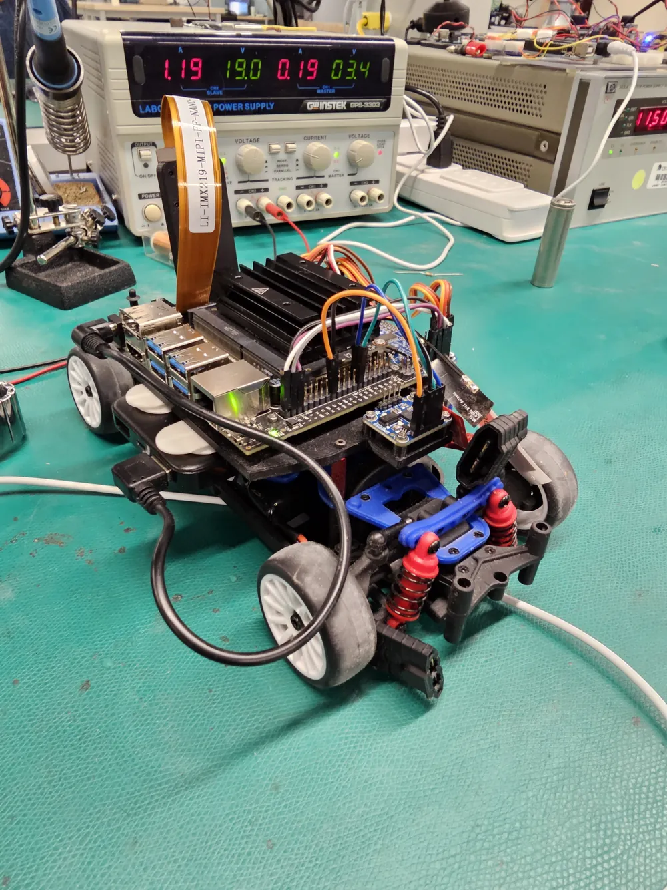
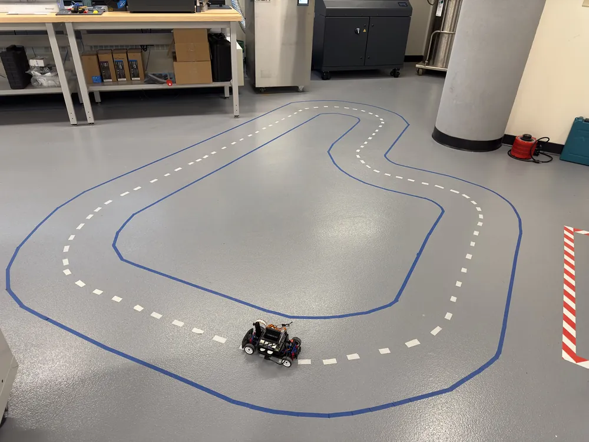

Project · Robotics / Edge AI
Autonomous Car (Lockheed Martin Sponsored)
Software Lead · Binghamton University Senior Design
September 2022 – April 2023
Team
Aslam Aliyu, Andrew Deoki, Patrick Nilan, Daniel Nissim
Objective
Develop an autonomous vehicle using the NVIDIA JetRacer AI/ML platform that can drive autonomously on a track using live sensor input and camera vision, optimized through real-time machine learning.
Results
- 95% object detection accuracy
- TensorRT cut inference latency by 0.03 seconds
- 32% faster response to moving objects and roadblocks
Hardware
- Jetson Nano Developer Kit
- CSI Wide-Angle Camera (Leopard Imaging IMX219)
- LaTrax Rally RC Chassis
- PWM Servo Motor Driver, RC Servo Multiplexer, IMU
- Electronic Speed Controller, WiFi Card, Battery Pack
Software and tools
- Python with Jupyter Notebook
- JetCam, OpenCV, PyTorch, and TensorRT (via torch2trt)
- Real-time data training GUI for live corrections
Key features
- Live ML model training with on-track data snapshots
- Real-time prediction and driving via Jetson Nano
- Line detection, obstacle detection, variable throttle
- Bounding boxes for stop signs and pedestrians
Training methodology
Collected image data manually using a GUI interface where optimal driving direction was marked by clicking. The model was retrained during live test runs using real-time feedback to refine driving predictions.
Gallery


Full report
The complete ECD304 detailed design report.
Download project PDFMore projects
Multi-Cycle ARM Processor (VHDL on FPGA) →